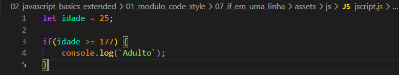
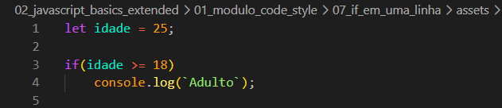
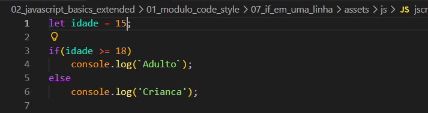

If em uma Linha
Intro
Aqui veremos a estrutura if em uma linha, porem sera mostrado a forma de nao se utilizar.
Aqui veremos a estrutura if em uma linha, porem sera mostrado a forma de nao se utilizar.
Iremos iniciar criando uma variavel let idade = 25; e depois criamos uma condicional para verificacao. Ficando da seguinte forma:

Quando temos uma condicional de uma linha podemos simpliesmente simplifica-la da seguinte forma:

